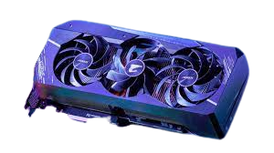
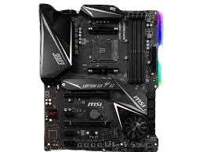
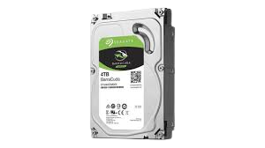
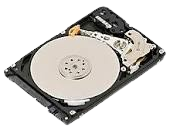
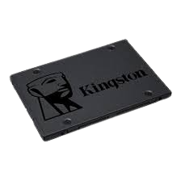
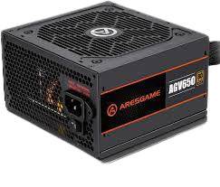

CPU
A central processing unit (CPU), also called a central processor, main processor or just processor, is the electronic circuitry that executes instructions comprising a computer program. The CPU performs basic arithmetic, logic, controlling, and input/output (I/O) operations specified by the instructions in the program. This contrasts with external components such as main memory and I/O circuitry,[1] and specialized processors such as graphics processing units (GPUs). The form, design, and implementation of CPUs have changed over time, but their fundamental operation remains almost unchanged. Principal components of a CPU include the arithmetic,logic unit (ALU) that performs arithmetic and logic operations, processor registers that supply operands to the ALU and tore the results of ALU operations, and a control unit that orchestrates the fetching (from memory), decoding and execution (of instructions) by directing the coordinated operations of the ALU, registers and other components.

What is gpu?
Graphics processing technology has evolved to deliver unique benefits in the world of computing.
The latest graphics processing units (GPUs) unlock new possibilities in gaming,
content creation, machine learning, and more.
What Does a GPU Do?
The graphics processing unit, or GPU, has become one of the most important types of computing technology, both for personal and business computing. Designed for parallel processing, the GPU is used in a wide range of applications, including graphics and video rendering. Although they’re best known for their capabilities in gaming, GPUs are becoming more popular for use in creative production and artificial intelligence (AI).
GPUs were originally designed to accelerate the rendering of 3D graphics. Over time, they became more flexible and programmable, enhancing their capabilities. This allowed graphics programmers to create more interesting visual effects and realistic scenes with advanced lighting and shadowing techniques. Other developers also began to tap the power of GPUs to dramatically accelerate additional workloads in high performance computing (HPC), deep learning, and more.
GPU and CPU: Working Together The GPU evolved as a complement to its close cousin, the CPU (central processing unit). While CPUs have continued to deliver performance increases through architectural innovations, faster clock speeds, and the addition of cores, GPUs are specifically designed to accelerate computer graphics workloads. When shopping for a system, it can be helpful to know the role of the CPU vs. GPU so you can make the most of both. 
Motherboards
A motherboard is the main printed circuit board (PCB) in a computer.
The motherboard is a computer's central communications backbone connectivity point,
through which all components and external peripherals connect.
Motherboards can be found in virtually all computers, especially desktop and laptop PCs.
The components that connect through them include chipsets, central processing units (CPU) and memory.
The external peripherals include Wi-Fi, Ethernet and graphics cards with the graphics processing unit, or GPU.
Motherboard manufacturers include Acer, ASRock, Asus, Gigabyte Technology, Intel and Micro-Star International.
How do motherboards work?
The PCB of a large motherboard may include six to 14 layers of fiberglass, copper connecting traces and copper planes for power and signal isolation. Other components get added to a motherboard through expansion slots. These include processor sockets; dual in-line memory modules; Peripheral Component Interconnect (PCI), PCI Express (PCIe) and solid-state drive M.2 slots; as well as power supply connections. HDD,SDD
HDD
A hard disk drive (HDD), hard disk, hard drive, or fixed disk] is an electro-mechanical data storage device that stores and retrieves digital data using magnetic storage with one or more rigid rapidly rotating platters coated with magnetic material. The platters are paired with magnetic heads, usually arranged on a moving actuator arm, which read and write data to the platter surfaces.[2] Data is accessed in a random-access manner, meaning that individual blocks of data can be stored and retrieved in any order. HDDs are a type of non-volatile storage, retaining stored data when powered off. Modern HDDs are typically in the form of a small rectangular box.
 SSD
A solid-state drive (SSD) is a solid-state storage device that uses integrated circuit assemblies to store data persistently, typically using flash memory, and functioning as secondary storage in the hierarchy of computer storage. It is also sometimes called a semiconductor storage device, a solid-state device or a solid-state disk, even though SSDs lack the physical spinning disks and movable read,write heads used in hard disk drives (HDDs) and floppy disks. SSD also has rich internal parallelism for data processing. In comparison to hard disk drives and similar electromechanical media which use moving parts, SSDs are typically more resistant to physical shock, run silently, and have higher input/output rates and lower latency. SSDs store data in semiconductor cells. As of 2019, cells can contain between 1 and 4 bits of data. SSD storage devices vary in their properties according to the number of bits stored in each cell, with single-bit cells ("Single Level Cells" or "SLC") being generally the most reliable, durable, fast, and expensive type, compared with 2- and 3-bit cells ("Multi-Level Cells/MLC" and "Triple-Level Cells/TLC"), and finally quad-bit cells ("QLC") being used for consumer devices that do not require such extreme properties and are the cheapest per gigabyte of the four. In addition, 3D XPoint memory (sold by Intel under the Optane brand) stores data by changing the electrical resistance of cells instead of storing electrical charges in cells, and SSDs made from RAM can be used for high speed, when data persistence after power loss is not required, or may use battery power to retain data when its usual power source is unavailable.
Psu
A power supply unit (PSU) converts mains AC to low-voltage regulated DC power for the internal components of a computer. Modern personal computers universally use switched-mode power supplies. Some power supplies have a manual switch for selecting input voltage, while others automatically adapt to the mains voltage. Most modern desktop personal computer power supplies conform to the ATX specification, which includes form factor and voltage tolerances. While an ATX power supply is connected to the mains supply, it always provides a 5-volt standby (5VSB) power so that the standby functions on the computer and certain peripherals are powered. ATX power supplies are turned on and off by a signal from the motherboard. They also provide a signal to the motherboard to indicate when the DC voltages are in spec, so that the computer is able to safely power up and boot. The most recent ATX PSU standard is version 3.0 as of mid-2022.
